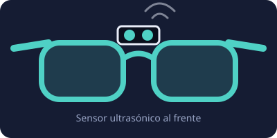

¿Para qué sirven?
Ayudan a detectar objetos, paredes o personas antes de chocar con ellos. Son útiles para personas con baja visión y para proyectos de movilidad asistida.

📡
Detección de obstáculos
El sensor ultrasónico mide la distancia hasta 1,5 m al frente.
🔊
Alerta sonora
El buzzer suena más rápido mientras más cerca está el obstáculo.
🔋
Batería de 9 V
Se alimenta con una pila de 9 V en su portapilas, fácil de cambiar.
🧠
Control con Arduino
Programable: puedes cambiar la distancia de alerta y el tipo de sonido.